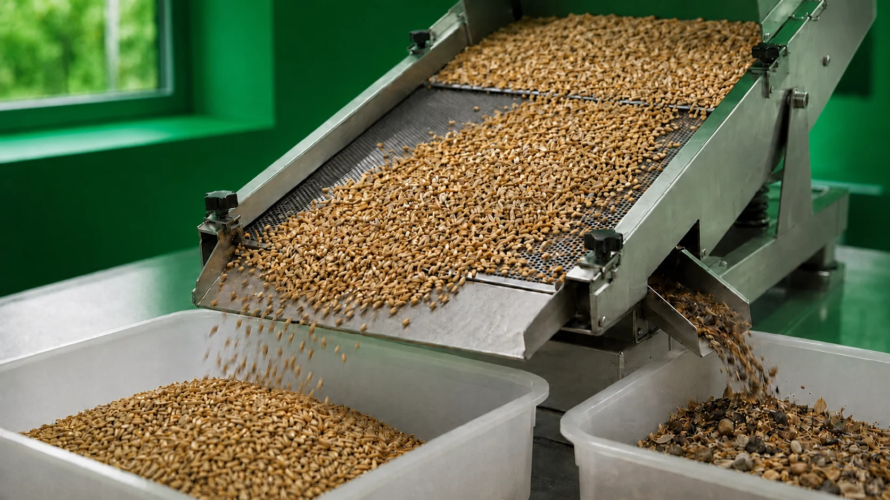
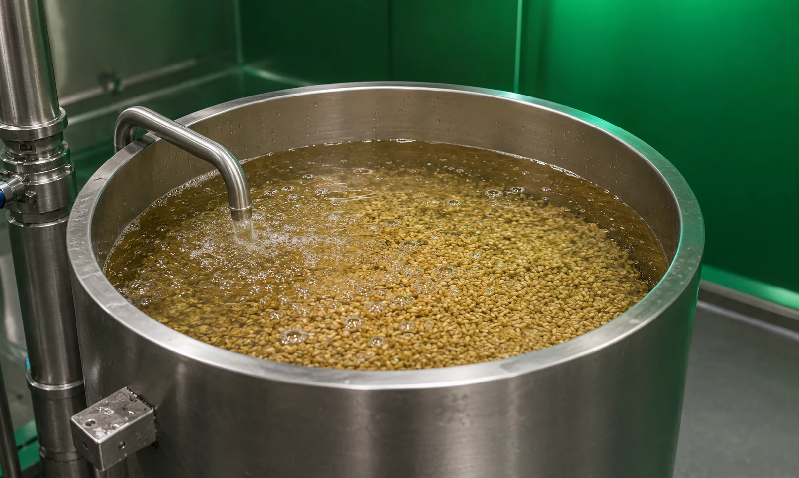
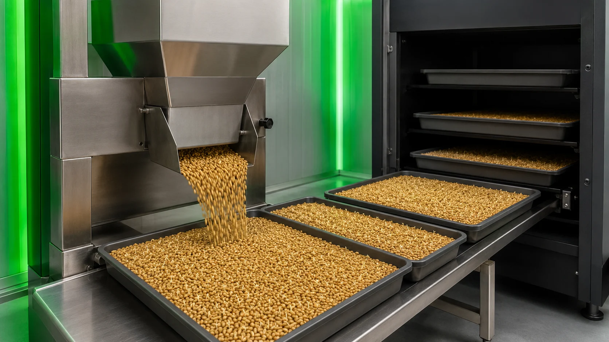
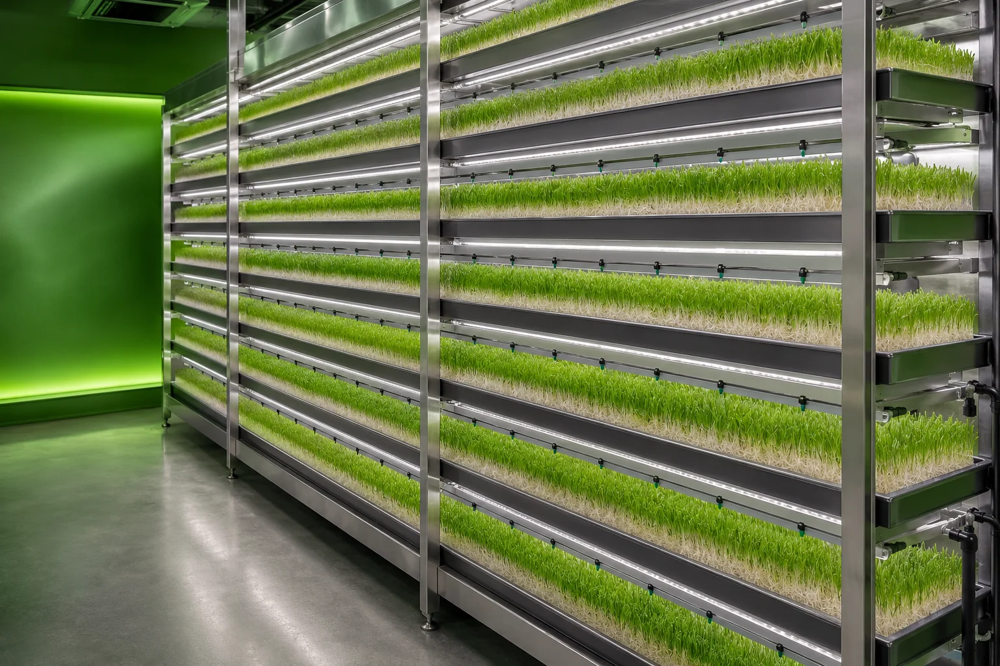
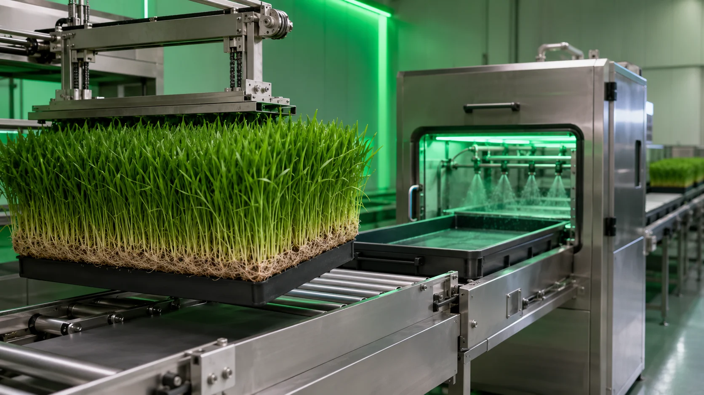

Hydroponische Frischfutterproduktion
Hydroponik-Pilotprojekt
Frisches Grünfutter aus kontrolliertem Hydroponikprozess
Bavaria AeroTech bereitet ein hydroponisches Frischfutterkonzept vor und validiert Prozess, Hygiene und betriebliche Integration in einer geplanten Pilotphase.

Einblick in den Prozess
Vom Korn zum hydroponischen Grünfutter.
Die Konzeptvisualisierung zeigt die visuelle Abfolge von der Keimung bis zur fertigen Futtermatte.
Produktionskonzept
Kontrollierte Produktion nahe am landwirtschaftlichen Bedarf
Das Konzept verbindet regionale Getreiderohstoffe, kontrollierte Wachstumsbedingungen, kurze Produktionszyklen und planbare Prozessführung.
Die Pilotvalidierung verbindet strukturierte Prozess- und Hygieneführung mit der direkten Zusammenarbeit landwirtschaftlicher Betriebe.
Produktionsprozess
Fünf Schritte vom Getreide zum Frischfutter
Der kontrollierte Prozess führt vom Rohstoff bis zur gereinigten Produktionsfläche für den nächsten Zyklus.
01Auswahl und EingangskontrolleVorbereitung

02Reinigung und VorbereitungVorbereitung

03Einweichen, Keimung und VerteilungKeimung

04Kontrolliertes WachstumWachstum

05Ernte, Ausgabe und ReinigungAbschluss

Pilotstatus
Prozessparameter werden im Pilot validiert
Konkrete Zyklus-, Ertrags- und Kapazitätswerte sind derzeit Planungsannahmen und werden nicht als aktuelle Produktions- oder Lieferleistung ausgewiesen.
Qualität und Vorbereitung
Kontrollierte Bedingungen
Im Pilot zu validieren
- Rohstoffqualität und hygienische Vorbereitung
- Kontrollierte Wachstumsbedingungen und Prozessstabilität
- Praktische Eignung, Arbeitsabläufe und spätere Skalierbarkeit
Pilotvalidierung
Technik, Futterqualität und Betriebsablauf gemeinsam prüfen
Die Pilotphase dient der technischen, betrieblichen und futterbezogenen Validierung. Dabei werden Rohstoffqualität, Prozessstabilität, Hygiene, Arbeitsabläufe und die praktische Nutzung im Betrieb systematisch dokumentiert.
- Technische Stabilität: Wiederholbare Abläufe und die Zuverlässigkeit der vorgesehenen Komponenten bewerten.
- Hygiene: Reinigungs- und Prozessabläufe auf ihre praktische Umsetzbarkeit prüfen.
- Produktkonsistenz: Gleichmäßigkeit des Frischfutters im Pilot beobachten.
- Wasser, Energie und Arbeit: Anforderungen erfassen, ohne Einsparungen oder Erträge zu versprechen.
- Sensorik und Steuerung: Die geplante Integration von Sensoren und Steuerung im Betrieb bewerten.
- Praktische Eignung: Handhabung, Ernte, Reinigung und Arbeitsabläufe unter realen Bedingungen prüfen.
- Wirtschaftliche Skalierbarkeit: Eine Grundlage für spätere Entscheidungen schaffen – vorbehaltlich der Pilotresultate.
Kooperationen im Pilot
Landwirtschaftliche Pilotpartner gesucht
Landwirtschaftliche Betriebe können Getreiderohstoffe, betriebliche Anforderungen und Erfahrungen aus der Fütterung in die Pilotvalidierung einbringen.
Im Fokus stehen praxisnahe Fragestellungen, transparente Dokumentation und eine sachliche gemeinsame Auswertung.
Pilotkooperation besprechenFAQ
Häufige Fragen zur Pilotphase
Ist die hydroponische Anlage bereits in Betrieb?
Die hydroponische Pilotanlage befindet sich in der technischen und organisatorischen Vorbereitung. Konkrete Pilotkooperationen und betriebliche Anforderungen werden bereits abgestimmt.
Ist bereits eine regelmäßige Lieferung von Frischfutter möglich?
Der Produktionsprozess wird im Pilotbetrieb schrittweise mit den beteiligten Partnern abgestimmt.
Welche Partner sind für den Pilot relevant?
Relevant sind insbesondere landwirtschaftliche Betriebe, wissenschaftliche Partner und fachlich passende Akteure, die an einer praxisnahen Pilotvalidierung interessiert sind.
Nächster Schritt
Hydroponik-Pilotprojekt besprechen
Sie möchten Rohstoffe, Fütterungsanforderungen oder einen landwirtschaftlichen Pilotbetrieb einbringen?
Projektanfrage senden